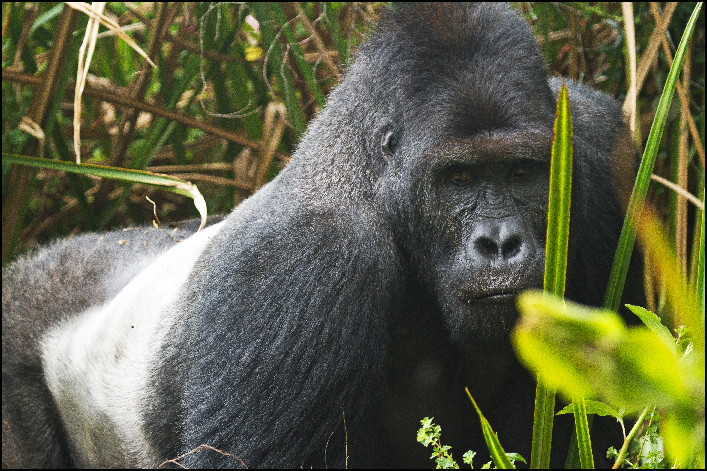
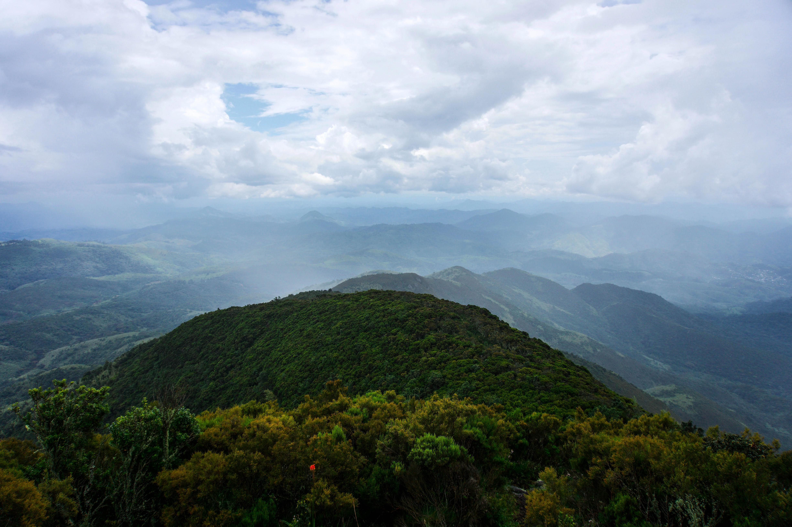
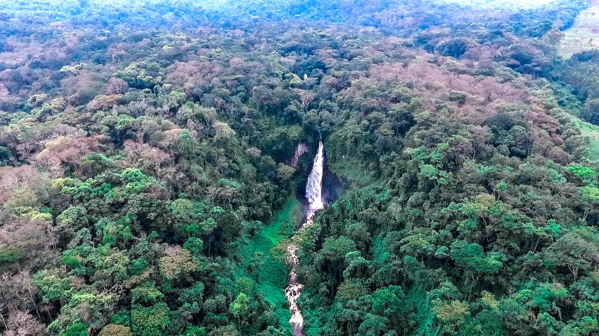

Chargement des données météo...
Bienvenue sur la plateforme PNKB Forest Watch
Cette application assure le suivi en continu du couvert forestier du Parc National de Kahuzi-Biega (Sud-Kivu, RDC) en couplant l'imagerie spatiale Copernicus Sentinel-2 et les alertes citoyennes de terrain.
Carte Interactive & Télédétection du PNKB
Basculez entre le plan OSM et la vue satellite réelle en haut à droite.
📲 Canaux d'alertes directs et gratuits
Soyez prévenu dès qu'une perte forestière (≥ 0,5 ha) est détectée dans le parc.
Alertes de Déforestation Détectées
📜 Journal Historique des Scans
Transmettre un signalement de terrain
Coupe d'arbres, feu de brousse, braconnage, intrusion observée ? Alertez immédiatement avec vos coordonnées GPS et photos certifiées.
Signalements Récents sur le Terrain
Cliquez sur « Statut » ou « Fiche PV » sous chaque rapportLe Parc National de Kahuzi-Biega (PNKB)
Situé dans la province du Sud-Kivu (RDC), le PNKB est l'un des sanctuaires de biodiversité les plus précieux d'Afrique centrale. Il préserve une transition écologique continue exceptionnelle sur 2 708 mètres de dénivelé (de 600 m à 3 308 m d'altitude au sommet du Mont Kahuzi).

Mâle dominant emblématique du PNKB. Le gorille de Grauer (Gorilla beringei graueri) est le plus grand primate vivant au monde.
Parc National de Kahuzi-BiegaLe PNKB abrite plus de 60 % de la population mondiale restante de cette sous-espèce endémique en danger critique d'extinction.
Secteur Tshivanga (ICCN)
Vue aérienne de la forêt de montagne et de la zone afro-alpine. Un château d'eau naturel vital pour tout le Sud-Kivu.
Massif de Kahuzi-Biega
Réseau hydrographique dense alimentant le bassin versant du fleuve Congo et le lac Kivu.
Forêt dense sempervirenteComparaison Historique : 2015 - 2026
Évolution de la canopée observée par imagerie satellite depuis le lancement de Sentinel-2.
Référence 2015
Situation 2026
Évolution Historique du Couvert Forestier
Pourcentage de canopée dense préservée dans le PNKB.
📊 Pertes Détectées par Scan Hebdomadaire
Sources et Partenaires Scientifiques
Les analyses géospatiales de PNKB Forest Watch s'appuient sur les flux de données ouverts de :
- Copernicus Dataspace (Sentinel-2) : Agence Spatiale Européenne (ESA) — imagerie optique multispectrale haute résolution (10m).
- NASA / USGS : Missions Landsat historiques pour les comparaisons décennales.
- Global Forest Watch (GFW / WRI) : Algorithmes de détection GLAD et RADD.
- ICCN (Institut Congolais pour la Conservation de la Nature) : Limites administratives du Parc National de Kahuzi-Biega.